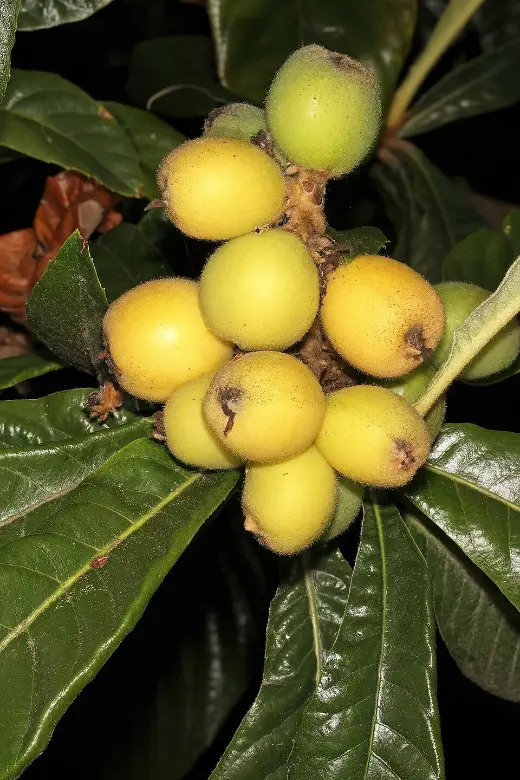

Loquat
Loquat is a wild fruit you can forage from March to May in Southeast, California and Southwest. Feral evergreen tree of the South and California with big crinkled leaves; clusters of orange, apricot-like fruit in spring.

When is loquat in season in the United States?
Loquat is usually in season March to May. Timing shifts with weather, latitude and altitude.
Where does loquat grow in the United States?
Loquat grows in Alabama, Arizona, Arkansas, California, Florida, Georgia, Hawaii, Kentucky, Louisiana, Mississippi, Nevada, New Mexico, North Carolina, Oklahoma, South Carolina, Tennessee, Texas, Utah, Virginia, West Virginia. Regions: Southeast, California, Southwest.
How do you recognise loquat?
Feral evergreen tree of the South and California with big crinkled leaves; clusters of orange, apricot-like fruit in spring.
How do you harvest loquat?
Pick only fully ripe fruit that comes away easily, into a shallow container so it doesn't crush. Leave plenty on the plant for birds and wildlife.
How do you eat loquat?
Fresh, jam, chutney and pies.
How do you store loquat?
Jam or freeze halves.
What is loquat good for?
Vitamin A, Vitamin C.
What can you cook with loquat?
- Loquat jam: Peeled, seeded loquats cooked into a golden jam.